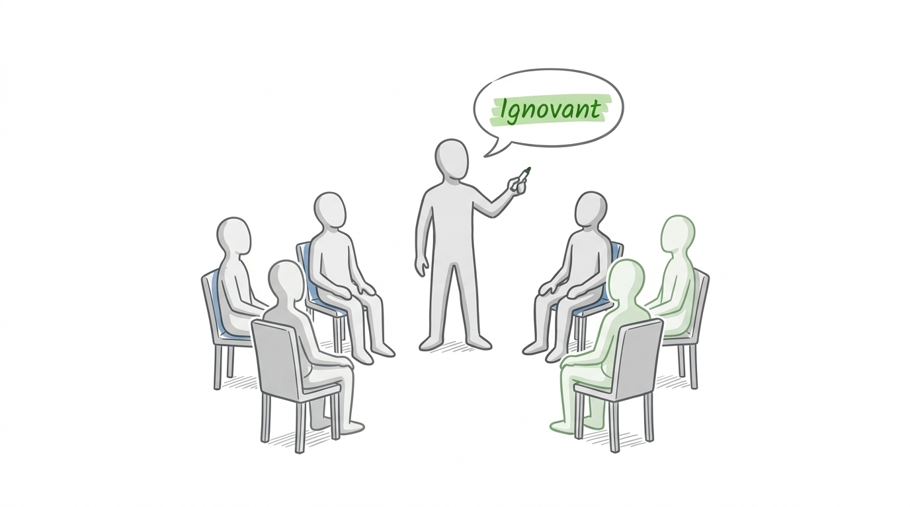
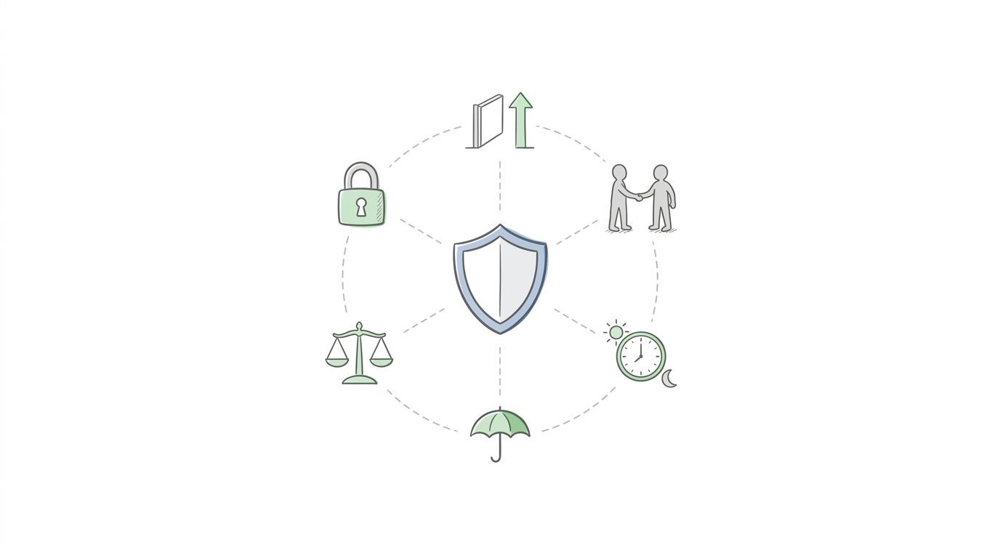
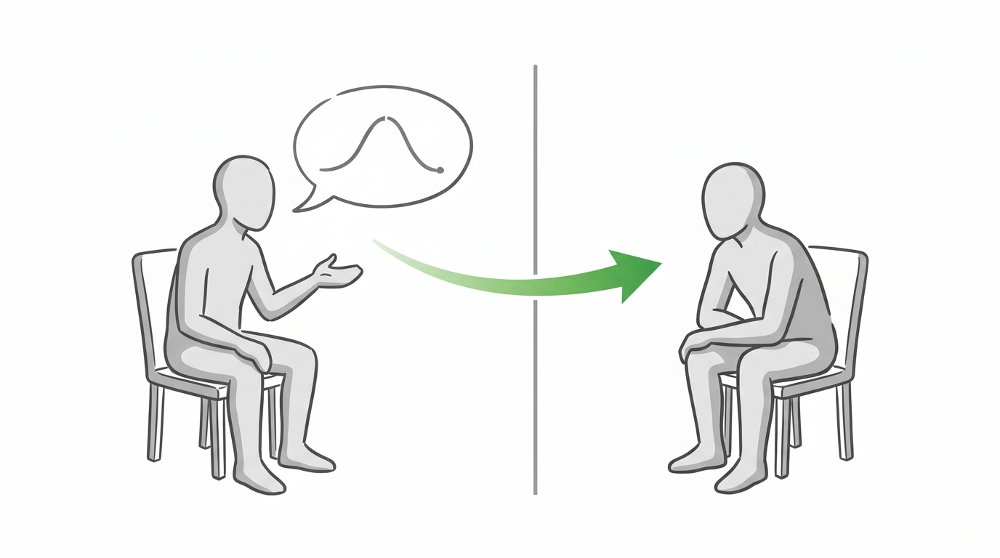
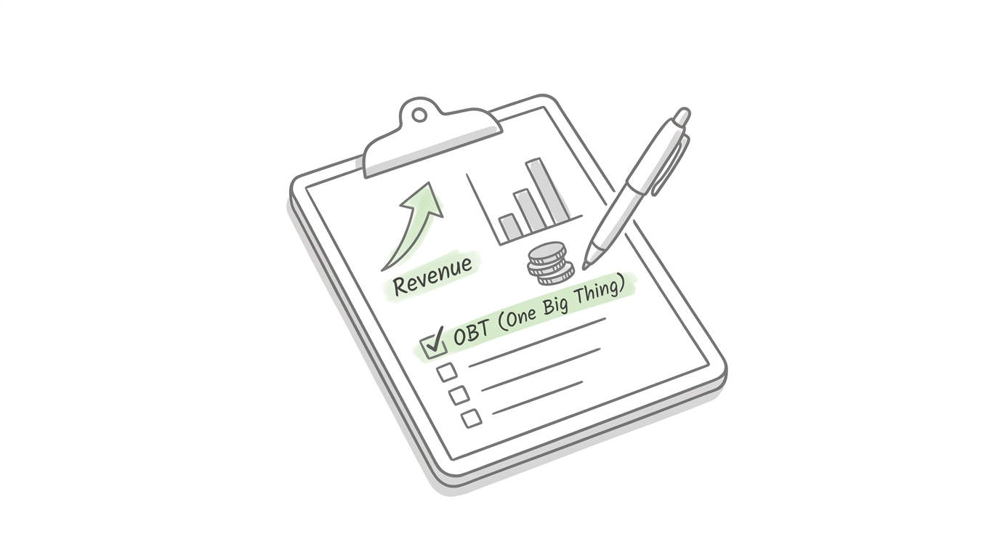
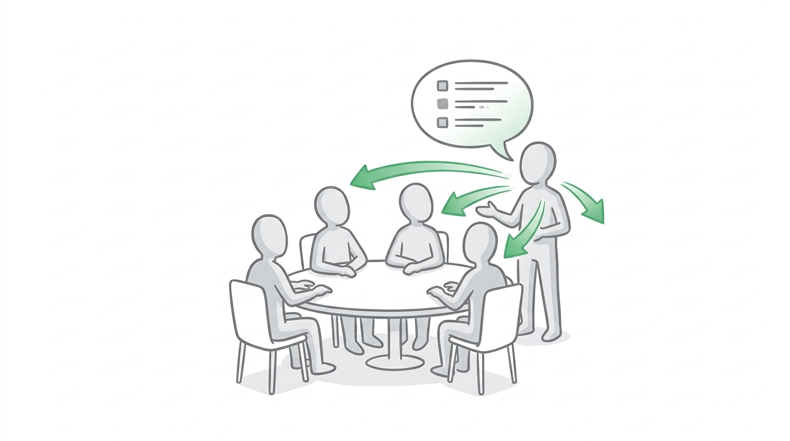
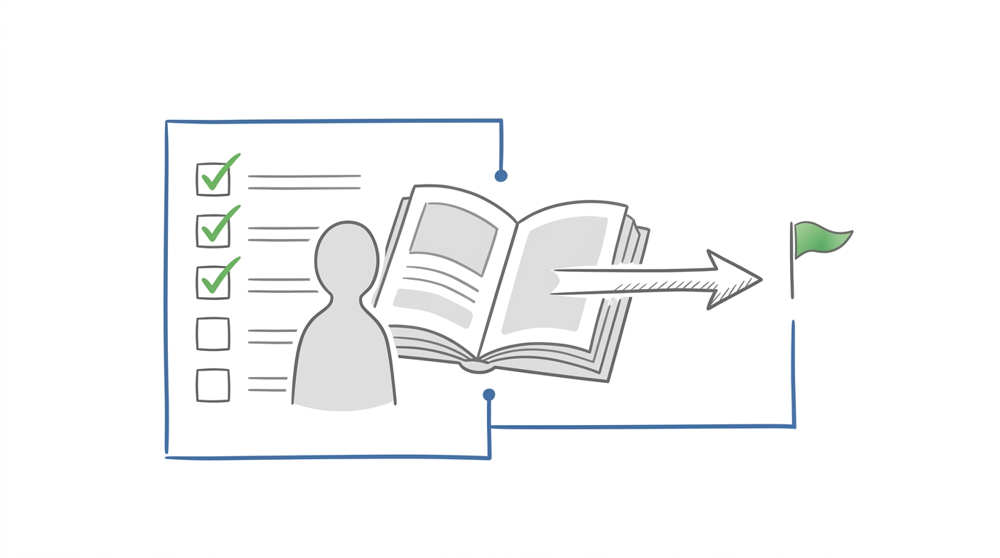
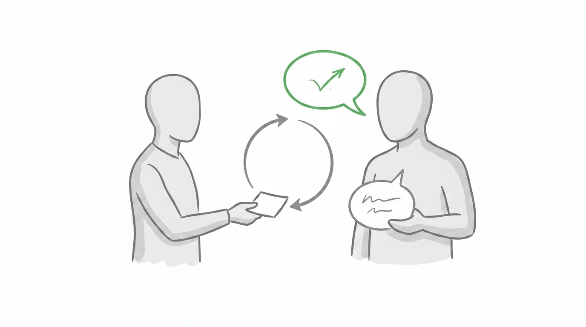

EO Accelerator
EOA Meeting 4
With Sarah
Lunch with Sarah
1:00 to 2:00 PM.
- Sarah (ops, InTandem) joins for lunch.
- One Word Barometer and Rules of Engagement are optional.
- No business updates while Sarah is in the room.
With Sarah
One Word Barometer
How are you feeling right now?
Optional during lunch. Included in the 1:00 to 2:00 hour.
- One word. An emotion. No wrong answers.

With Sarah
Rules of Engagement
- Challenge yourself. Challenge each other.
- Discussion and collaboration. Your best contribution.
- Be present in the room.
- No blame, no shame. No dumb questions.
- Don't ignore the brutal facts. Bring them forward.
- Confidentiality. What happens here stays here.
- Feedback runs both ways. Tell me what didn't land.
- Articles and prompts are living. Always pull the latest from darlison.com, not a saved copy.

With Sarah
AI Walkthrough
With Sarah. About 60 minutes. 2:00 to 3:00 PM.
- Interactive session with live examples.
- Questions as we go.
- Q&A through 3:00 PM.

Break
Break
10 minutes. Be back at 3:10 PM.
The room
Business Updates
About 5 minutes each. 5 members. 3:10 to 3:35 PM.
- Last Month's Action
- Its Measure of Success and Date
- Was it done?
- Did it achieve the Measure of Success?
- What did you learn?
- This Month's Action
- Its Measure of Success and Date
- Revenue: On Track / Off Track
- Cash: On Track / Off Track
- Widget (Profit / X): On Track / Off Track
- Best of the Month
- Worst of the Month
- Presentation Topic

The room
Presentations
15 minutes each. 5 members. 3:35 to 4:50 PM.
- Headline: what is the issue?
- Significance: why does it matter?
- Background: what context does the group need?
- Options considered: what have you tried or thought about?
- Experience shares from the group (5 min)
- Coach feedback (5 min)

Lark & Ledger
Sample 3HAG
Lark & Ledger, a founder-led bookkeeping studio. Three years ending 31 December 2028.
3HAG statement. The bookkeeping studio clinics call when the books have to be right and on time.
| Area | Owner | Target |
|---|---|---|
| Revenue | Maya Chen | $780,000 |
| Profit margin | Omar Hassan | 18% |
| Cash | Priya Shah | $96,000 (about three months of base cost) |
| Widgets (X) | ||
| Inquiries | Maya Chen | 180 / year (15 / month) |
| Discovery calls | Maya Chen | 72 / year (6 / month) |
| New clients signed | Lena Ortiz | 24 / year (2 / month) |
| Active monthly clients the X | Lena Ortiz | 70 active clients at year-end |
Key capabilities
| # | Capability we must build inside the company |
|---|---|
| 1 | A referral engine that fills the pipeline without the founder chasing every lead. |
| 2 | A close calendar any bookkeeper can hit in five business days. |
| 3 | A monthly client review that flags cash issues before the owner asks. |
| 4 | A playbook that makes a new bookkeeper useful in 30 days. |
Known for
| In the customer's words |
|---|
| "They keep the books clean, and we always know where the cash stands." |
Lark & Ledger
Sample 1HAG
Lark & Ledger. One year ending 31 December 2026.
| Area | Owner | Target |
|---|---|---|
| Revenue | Maya Chen | $360,000 |
| Profit margin | Omar Hassan | 15% |
| Cash | Priya Shah | $42,000 |
| Widgets (X) | ||
| Inquiries | Maya Chen | 96 / year (8 / month) |
| Discovery calls | Maya Chen | 48 / year (4 / month) |
| New clients signed | Lena Ortiz | 12 / year (1 / month) |
| Active monthly clients the X | Lena Ortiz | 36 active clients at year-end |
Annual company priorities
| # | Priority | Owner | Measure of success | Connection to 3HAG |
|---|---|---|---|---|
| 1 | Stand up a referral and intro engine | Maya Chen | Improve qualified inquiries from 4 to 8 a month (half from referral) by 31 December 2026 | A referral engine that fills the pipeline without the founder chasing every lead. |
| 2 | Put the five-day close on the whole book | Lena Ortiz | Improve on-time monthly closes from 55% to 90% by 31 December 2026 | A close calendar any bookkeeper can hit in five business days. |
| 3 | Launch the monthly client review | Priya Shah | Improve clients on a written monthly review from 20% to 90% by 31 December 2026 | A monthly client review that flags cash issues before the owner asks. |
Lark & Ledger
Sample QHAG
Lark & Ledger. Quarter ending 30 September 2026.
| Area | Owner | Month 1 · Jul | Month 2 · Aug | Month 3 · Sep | Quarter total |
|---|---|---|---|---|---|
| Revenue | Maya Chen | $24,000 | $28,000 | $32,000 | $84,000 |
| Profit margin | Omar Hassan | 13% | 14% | 15% | 14% (blended) |
| Cash | Priya Shah | $28,000 | $32,000 | $38,000 | $38,000 (end of quarter) |
| Widgets (X) | |||||
| Inquiries | Maya Chen | 6 | 7 | 9 | 22 |
| Discovery calls | Maya Chen | 3 | 4 | 4 | 11 |
| New clients signed | Lena Ortiz | 1 | 1 | 1 | 3 |
| Active monthly clients the X | Lena Ortiz | 28 | 31 | 34 | 34 (end of quarter) |
Quarterly company priorities
| # | Priority | Owner | Measure of success | Connection to 1HAG |
|---|---|---|---|---|
| 1 | Ship the intro sequence and book three referral partners | Maya Chen | Improve qualified inquiries from 4 to 9 a month (3 from referral) by 30 September 2026 | Stand up a referral and intro engine. |
| 2 | Move the current book onto the five-day close | Lena Ortiz | Improve on-time closes from 65% to 90% by 30 September 2026 | Put the five-day close on the whole book. |
| 3 | Send the monthly review note across the book | Priya Shah | Improve clients on a written review from 8 to 24 by 30 September 2026 | Launch the monthly client review. |
Lark & Ledger
Sample 13-Week Sprint Lanes
Lark & Ledger. 29 June to 27 September 2026. Weeks left to right. One deliverable per priority per week.
planning
Planning
▲ Coach and finalizePlanning Cascade
About 11 minutes each. 5 members. 4:50 to 5:45 PM.
- Each member presents their own cascade: 3HAG, then 1HAG, then QHAG + 13-Week Sprint Lanes
- Use the Lark & Ledger samples as the pattern
- Keep one thread: the 3-year goal, the annual plan, and this quarter's sprint lanes
Wrap-up
Personal Review
4 minutes. Work alone. Personal wrap-up, 5:45 to 6:00 PM.
- What are your key takeaways from today?
- What commitments are you making?
- What is your one big thing (OBT) for next month?
- The action: what you will do
- The one Owner's Outcome measure it improves (from where it is now, toward its goal)
- Action done by (date) and improvement shows by (date)
- Pressure test: is the improvement worth the effort? how could it go wrong? does it cross a guardrail?
- Update your EOA Prep document with your conclusions
Wrap-up
Share Your Conclusions
Personal wrap-up. Brief share.
- Brief share around the room
- Present your key takeaways
- State your OBT for next month
- What problem does it solve?
- How does it connect to your Owner's Outcome?
- Email your revised OBT for this month to byron@darlison.com from the meeting
Wrap-up
Homework
- Email all homework to byron@darlison.com at least five business days before next meeting
▲ Review and Complete
★ Read Ahead and Complete the ✦ AI Prompts for M5
EOA Prep Prompt
- Run the EOA Prep Prompt
Books
- Metronomics - Shannon Susko
- Start with Why - Simon Sinek
- 3HAG WAY - Shannon Susko
- Building a StoryBrand - Donald Miller
- Good to Great - Jim Collins
- The Speed of Trust - Stephen M.R. Covey
- Dare to Lead - Brene Brown

Reminder: everything on darlison.com updates continuously. Pull the current version each time. Don't work from a saved copy.
Wrap-up
Housekeeping
Give / Take (out of 5)
Upcoming
- December 14, 2026 - Accountability Meeting (M5)
- November 26, 2026 - Learning Day: Strategy

Wrap-up
Feedback
30 seconds each.
- What landed today?
- What confused you, or where did the materials fail you?
- What would have made this session more useful?

Wrap-up
One Phrase Close
Personal wrap-up. Ends at 6:00 PM.
5 words or less.
How do you feel right now?